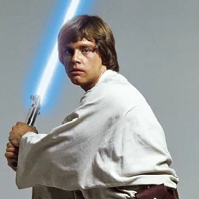
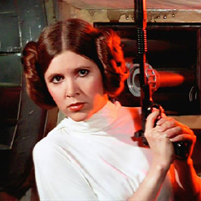
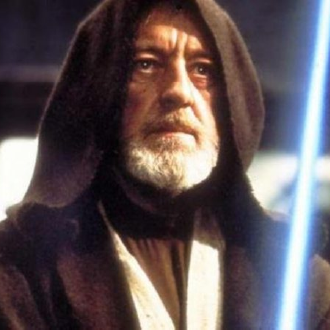
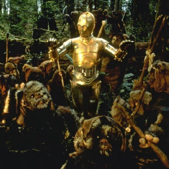
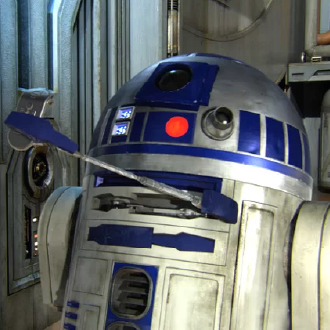
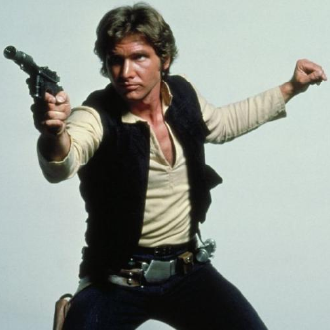
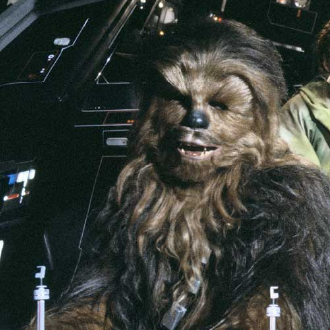

-
Luke Skywalker
Descrição
Luke Skywalker foi um lendário Cavaleiro Jedi que ajudou a derrotar o Império Galáctico e a formar a Nova República, assim como a Nova Ordem Jedi. Nascido em 19 ABY em Polis Massa, filho do Cavaleiro Jedi caído Anakin Skywalker, que mais tarde se tornou seu inimigo, Darth Vader, o Lorde Negro dos Sith, e da Senadora de Naboo, Padmé Amidala, irmão de Leia Organa Solo.
-
Leia Organa
Descrição
Leia Organa (nascida Leia Amidala Skywalker) era uma Humana sensível à Força que serviu como Princesa de Alderaan, membro do Senado Imperial, General da Aliança pela Restauração da República e da Nova República, e a general fundadora da Resistência. Apesar de tudo, ela se tornou fundamental na derrota do Império Galáctico na Guerra Civil Galáctica e liderou a guerra contra a Primeira Ordem. Ela nasceu dezenove anos antes da Batalha de Yavin como filha do Cavaleiro Jedi Anakin Skywalker e da Senadora Padmé Amidala. Depois que sua mãe morreu e seu pai caiu para o lado sombrio da Força para se tornar Darth Vader, Leia foi adotada pela Casa dos Organa. Ela tomou o lugar de seu pai adotivo, Bail Organa, no Senado e ajudou a liderar a batalha contra o Império.
-
Obi-Wan Kenobi
Descrição
Obi-Wan Kenobi, mais tarde conhecido também como Ben Kenobi durante seu exílio, foi um Humano Mestre Jedi que serviu à República Galáctica. Ele foi mentor de tanto de Anakin Skywalker quanto seu filho, Luke, treinando-os nos caminhos da Força. Nascido planeta Stewjon, Kenobi foi levado como o aprendiz Padawan de Qui-Gon Jinn. Kenobi tornou-se o primeiro Jedi em um milênio a derrotar um Lorde Sith quando ele derrotou Darth Maul durante a Batalha de Naboo. Durante a batalha, Jinn foi mortalmente ferido por Maul, e pereceu nos braços de Kenobi. A pedido de Jinn, Kenobi levou Anakin Skywalker como seu Padawan, treinando durante a década que levaria às Guerras Clônicas.
-
C-3PO
Descrição
C-3PO foi um droide de protocolo unidade 3PO projetado para interagir com organismos, programado primariamente para etiqueta e protocolo. Ele era fluente em mais de seis milhões de formas de comunicação e desenvolveu uma personalidade espalhafatosa e propensa à preocupação durante várias décadas de operação. Junto com seu parceiro, o droide astromecânico R2-D2, C-3PO constantemente se encontrava envolvido em momentos críticos da linha do tempo da história galáctica. C-3PO foi construído a partir de peças sobressalentes por Anakin Skywalker, um humano escravo que vivia em Mos Espa, uma cidade no mundo da Orla Exterior de Tatooine.
-
R2-D2
Descrição
R2-D2, também chamado simplesmente de R2, foi um droide astromecânico série R2 produzido pelas Indústrias Autômato com programação masculina. Um droide esperto que serviu a uma multidão de mestres, ele nunca teve sua memória apagada, o que resultou em uma personalidade aventureira e independente. Muitas vezes presente em momentos críticos da linha do tempo da história galáctica, sua bravura e ingenuidade salvaram a galáxia várias vezes.
-
Han Solo
Descrição
Han Solo era um contrabandista Humano do planeta Corellia. Seu melhor amigo e companheiro de primeira foi Chewbacca, um Wookiee de Kashyyyk, quem Solo apelidou de "Chewie". Solo pilotou um cargueiro personalizado, a Millennium Falcon, que tinha ganhado do colega Lando Calrissian. Solo e Chewbacca viriam a juntar-se à Aliança Rebelde depois de resgatar a Princesa Leia Organa de Alderaan da Estrela da Morte, uma estação de batalha construída pelo Império Galáctico capaz de destruir planetas inteiros, e auxiliando na destruição da mesma estação de batalha em um confronto mais tarde. Solo mais tarde se tornaria um General graças a seus esforços em uma série de batalhas da Aliança contra o Império Galáctico.
-
Chewbacca
Descrição
Chewbacca (ou "Chewie", como ele era conhecido por seus amigos) foi um Wookiee masculino guerreiro, contrabandista e co-piloto da Espaçonave de Han Solo, a Millennium Falcon. Nascido no planeta de Kashyyyk, Chewbacca foi um veterano das Guerras Clônicas e um herói da Aliança para a Restauração da República.